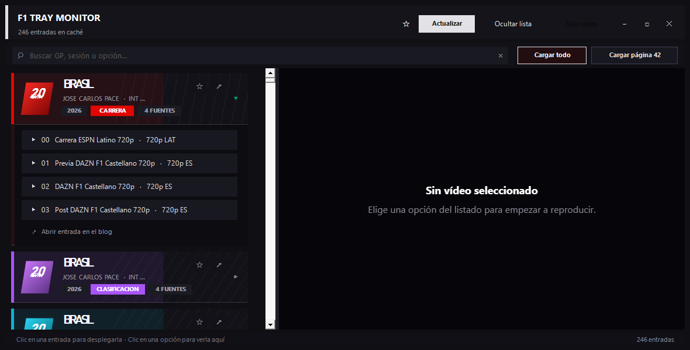
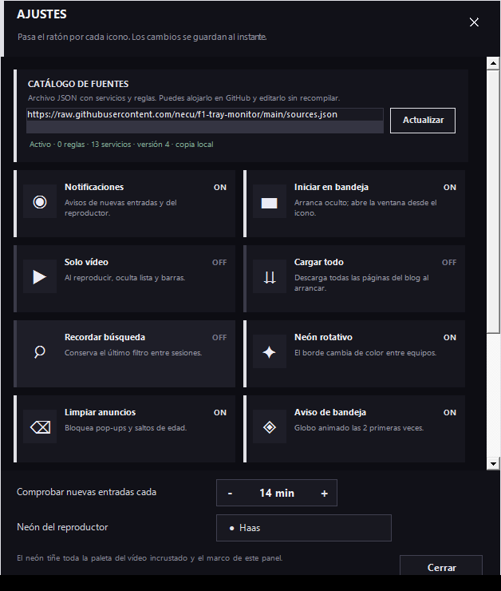
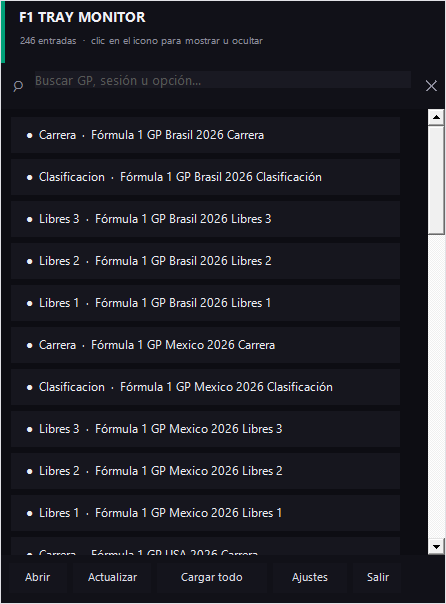

Bandeja con panel propio
Clic para mostrar u ocultar; clic derecho abre un panel oscuro con buscador, entradas desplegables y acciones rápidas.
F1 Tray Monitor reúne las entradas del blog, un catálogo de fuentes que puedes editar en GitHub y un reproductor incrustado con selector por plataforma. Todo en una app portable, en español y sin telemetría.
Cada función responde a una fricción real: esperar, buscar a mano, perder el hilo de qué GP estaba abierto o no saber qué fuente funciona.
Clic para mostrar u ocultar; clic derecho abre un panel oscuro con buscador, entradas desplegables y acciones rápidas.
Revisa el blog cada N minutos, solo los días que elijas, y avisa solo de lo nuevo.
Ignora tildes, conoce sinónimos (interlagos → Brasil), prefijos y erratas.
Marca un GP o una sesión y filtra solo favoritos en la ventana y en la bandeja a la vez.
Las últimas 8 consultas, en un panel flotante que no roba el foco, con borrado individual.
Un sources.json con servicios, colores, prioridades y caducidad. Se puede alojar en GitHub y se refresca cada 6 h.
Fuentes agrupadas, insignias de calidad e idioma, estrella para la principal y navegación por teclado.
WebView2 con capas de ventana, modo solo vídeo y memoria de calidad/idioma por servicio.
Exporta e importa configuración, favoritos, búsquedas y catálogo en un único JSON.
Visor de registro, comprobación de versiones en GitHub Releases y paquete reproducible con SHA256.
Ventana precalentada, tarjetas cacheadas y divisor proporcional sin mínimos rígidos.
Sin analítica ni servidores propios. Los datos viven en tu carpeta, en dos archivos JSON.
Capturas reales generadas por la autoprueba de la app, no montajes.



No hay instalador ni permisos de administrador. La app se queda en la carpeta que elijas.
Desde la sección de descarga o desde GitHub Releases.
Por ejemplo C:\Users\tu-usuario\F1TrayMonitor.
F1 Monitor.cmdEl icono aparece en la bandeja. La primera vez descarga las entradas recientes.
Get-FileHash .\F1-Tray-Monitor-1.3.0.zip -Algorithm SHA256
# 9D7FA28830B278245F0B258D76C18942E3D2043363D2AF17097A73DA22D1B8BFreleases/SHA256SUMS
El catálogo es un JSON versionado: servicios con su color, reglas que casan por GP, año, sesión o texto, y opciones con calidad e idioma. Sin volver a compilar.
priority decide conflictos y starts/expires retiran enlaces temporales sin borrarlos.
tools/add-source.ps1 valida la URL, comprueba el servicio, evita duplicados y pasa check_sources.ps1 antes de guardar.
Esquema JSON, ejemplo mínimo y script de comprobación en cada push y pull request.
.\tools\add-source.ps1 -Url "https://ejemplo.com/embed/abc" `
-Name "DAZN ES" -Service dazn -Quality 1080p -Lang ES `
-Year 2026 -Gp brasil -Session Carrera -Priority 30El catálogo solo contiene URLs y metadatos: el proyecto no aloja ni redistribuye vídeo.
La 1.3.0 está cerrada. La fase 2 se centra en compartir mejor y abrir el sistema de fuentes.
| Área | Estado | Detalle |
|---|---|---|
| Página y release automática | hecho | Esta página, workflow por tag y hashes. |
| Alta de fuentes | hecho | add-source.ps1 + skill para investigar y validar. |
| Reproductor universal | 2.1 | mpv embebido: MKV, HEVC, AC3/DTS, subtítulos y varias pistas dentro de la app. |
| Descargas legales | 2.2 | aria2 con cola, pausa y «ver ahora»; sin índices de contenido con derechos. |
| Torrents progresivos | 2.3 | Prioridad cabeza/cola y reproducción sobre el archivo en crecimiento. |
| Teclado en tarjetas | pendiente | Tab, Enter, flechas y foco visible. |
Paquete portable para Windows 10/11. Incluye WebView2 SDK, extensión de limpieza y documentación bilingüe.
Aviso legal: la aplicación no aloja, indexa ni redistribuye contenido audiovisual. El catálogo contiene únicamente enlaces y metadatos aportados por el usuario, que es responsable de usarlos conforme a la ley de su país.